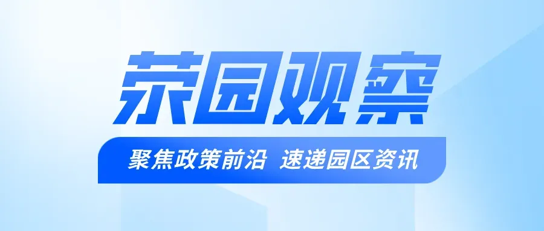
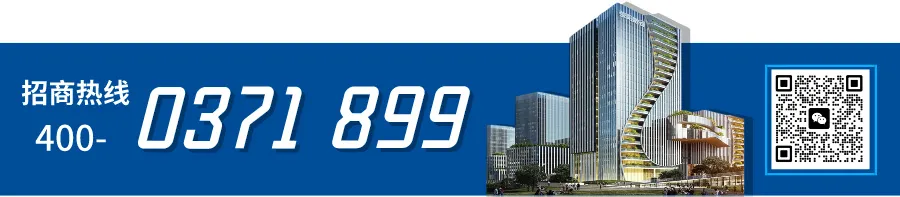

荥园观察
一月新程启幕时
交流合作开新局，互利共赢谱新篇
企业入驻添活力，产业生态更繁荣
平台搭建引贤才，创新驱动强引擎
项目引进促转型，高质量发展迈新阶
战略合作签约
1月21日
格行技术有限公司与荥阳市数字经济产业园达成战略合作
2026年1月21日，格行技术有限公司与荥阳市数字经济产业园战略合作签约仪式通过线上方式成功举行。双方正式确立合作伙伴关系，将共同致力于推进产业园区的数字化、智能化转型升级。格行技术有限公司市场部经理卢耀书代表公司出席，荥阳市数字经济产业园招商经理韩姗作为园区代表郑重签约。
卢耀书在仪式上表示，我们非常高兴能与荥阳市数字经济产业园达成战略合作。格行技术将持续投入研发，把在物联网连接领域的创新成果与成熟经验，深度融入园区的实际运营场景中。我们期待通过提供从底层网络接入到智能化应用的一揽子解决方案，助力园区构建坚实可靠的数字底座，共同探索可复制、可推广的智慧园区建设新模式。
1月30日
郑州辽赘信息技术有限公司与园区签约拟入驻协议
2026年1月30日，荥阳市数字经济产业园与郑州辽赘信息技术有限公司正式签署入驻协议，标志着双方在数字经济领域的深度合作迈出坚实一步。郑州辽赘信息技术有限公司负责人刘磊、荥阳市数字经济产业园招商经理李泉政作为代表签约。
此次签约拟入驻的郑州辽赘信息技术有限公司，是一家在信息技术领域具有深厚积累和创新能力的企业。公司专注于大数据分析、人工智能算法研发以及数字化解决方案提供，拥有一支高素质、专业化的技术团队，在行业内树立了良好的口碑。
交流合作促发展
1月7日
荥阳市数字经济产业园与新郑市泽之润生物科技有限公司交流合作
2026年1月7日，荥阳市数字经济产业园与新郑市泽之润生物科技有限公司就潜在合作事宜展开深入探讨，为双方未来的协同发展奠定了坚实基础。
新郑市泽之润生物科技有限公司商务经理刘家豪表示，泽之润生物科技一直关注数字技术在生物领域的应用，积极寻求与数字经济领域的合作机会，以推动企业的创新发展。荥阳市数字经济产业园完善的产业生态、丰富的平台资源和专业的数字化服务，为企业提供了良好的发展环境和机遇。如果双方能够达成合作，泽之润生物科技将借助园区的优势资源，进一步提升自身的研发创新能力和市场竞争力；同时，也将为园区的数字经济发展注入新的活力，实现双方的优势互补、共同发展。
1月9日
荥阳市数字经济产业园与深圳市绿巨能科技发展有限公司交流合作
2026年1月9日，深圳市绿巨能科技发展有限公司与荥阳市数字经济产业园通过线上会议形式，围绕深化合作、共促产业升级等议题展开深度洽谈。双方旨在依托各自资源禀赋与优势，搭建稳定合作桥梁，为荥阳市数字经济高质量发展注入新动能。深圳市绿巨能科技发展有限公司销售经理胡雨，荥阳市数字经济产业园招商经理李泉政、韩姗共同出席本次沟通会议。
会上，双方聚焦3C电子产业创新发展、产品供应链协同等核心方向充分交换意见，积极探寻合作契合点，为后续合作路径规划奠定基础。 作为高端消费3C电子领域的标杆企业，深圳市绿巨能科技发展有限公司自成立以来，始终秉持“研发为核、产销一体”的发展理念，构建了覆盖研发、生产、服务、销售的全产业链布局，深耕电脑、相机、影音设备、智能电池等核心产品领域。
1月14日
荥阳市数字经济产业园与江西瑞华智能科技有限公司召开合作交流会
2026年1月14日，江西瑞华智能科技有限公司销售经理白馨与荥阳市数字经济产业园招商经理李泉政通过线上会议形式，就新能源领域合作展开深度交流。双方围绕技术创新、产业协同及资源整合达成多项共识，为未来合作奠定坚实基础。
作为国家高新技术企业与专精特新认证企业，江西瑞华智能自2018年成立以来，始终深耕新能源充电桩及电源储能系统领域，形成集科研、设计、制造、销售于一体的全产业链能力。公司凭借自主研发的智能充电解决方案，已为全球客户提供一站式技术赋能，产品覆盖快充设备、光储充一体化系统等核心领域。会上，白馨通过“云参观”形式详细介绍了企业生产运营体系，从智能化车间管理到严苛的品控流程，全面展示了瑞华智能在新能源赛道的技术积淀与产能优势。
1月16日
河北驰业云网络技术有限公司与荥阳市数字经济产业园交流合作
2026年1月16日，河北驰业云网络技术有限公司市场经理王东与荥阳市数字经济产业园招商经理韩姗、李海龙通过线上会议形式，就双方合作事宜展开务实洽谈，为后续业务拓展与产业协同奠定基础。
在本次线上会议中，河北驰业云网络技术有限公司市场经理王东介绍了公司的战略规划。他表示，河南作为经济大省，中小企业数量众多，对数字化转型的需求日益增长，市场潜力巨大。河北驰业云计划将业务拓展至河南，借助自身在数字化领域的技术优势和服务经验，助力河南中小企业提升数字化能力，实现高质量发展。
王东进一步提出，若双方合作顺利推进，河北驰业云将考虑入驻荥阳市数字经济产业园。这一举措不仅有利于公司更好地贴近河南市场，为客户提供更及时、高效的服务，还能与园区内的其他企业形成产业协同效应。
1月22日
园区与雷普曼科技共商直播产业生态构建
2026年1月22日，园区与常州市雷普曼电子科技有限公司成功举行线上合作交流会。园区招商经理李泉政与雷普曼公司总经理郝秋颖围绕直播行业基础设施服务、产业生态共建等议题展开深入探讨，为未来实质性合作奠定了坚实基础。
常州市雷普曼电子科技有限公司是一家专注于现代化直播间整体场景设计与搭建的专业服务商。公司紧抓直播电商与数字内容产业爆发式增长的趋势，致力于为客户提供从方案设计、设备集成、系统调试到技术维护的一站式场景解决方案。其业务涵盖专业级灯光音响系统布设、高清视频采集设备配置、虚拟与实景直播间定制搭建等核心环节，助力内容创作者、品牌方及企业打造高效、专业、沉浸式的直播呈现效果，是直播产业链中不可或缺的技术支撑环节。
1月22日
园区与湖州全都来了网络科技有限公司交流合作
2026年1月22日，荥阳市数字经济产业园与湖州全都来了网络科技有限公司交流合作，双方聚焦数字化营销服务领域，展开深度对话与战略探讨，旨在通过优势资源整合与创新协作模式，为园区入驻企业注入新动能，提供更高效、更全面、更具前瞻性的数字化解决方案，共同擘画数字经济高质量发展新蓝图。
湖州全都来了网络科技有限公司是数字文旅与住宿业智慧运营领域的创新者，其自主研发的“订单来了”系统，已成为全球领先的智能酒店及民宿管理云平台（云PMS）。
本次交流合作会上，双方围绕如何利用前沿数字工具赋能本地企业展开了务实探讨。湖州全都来了网络科技有限公司项目经理汪涛详细介绍了公司在数字化营销，尤其是小红书等内容电商平台团购业务领域的成功经验、技术优势与服务模式。荥阳市数字经济产业园招商经理韩姗则就园区的产业生态、企业构成及当前在数字化转型升级过程中的普遍需求与痛点进行了深入阐述。会谈重点聚焦于“小红书团购业务数字化营销服务”这一具体板块，双方就如何将先进的平台运营经验、内容营销策略与数据管理工具引入园区，量身打造适合本地企业的营销解决方案，进行了卓有成效的沟通，并初步明确了合作方向与推进路径。
1月29日
荥阳市数字经济产业园与郑州圣光装饰工程有限公司召开合作交流会
2026年1月29日，郑州圣光装饰工程有限公司销售经理王磊与荥阳市数字经济产业园招商经理李泉政通过线上会议，双方在客户资源共享、智能场景应用及定制化服务方案等议题上达成初步合作意向，为传统企业与数字平台协同发展提供新思路。
交流中，王磊介绍，郑州圣光装饰工程有限公司正从传统装饰向“智能空间解决方案提供商”转型，目前已研发出模块化智能展厅、自适应照明系统等核心产品。王磊强调，荥阳市数字经济产业园内汇聚了众多高科技企业，这些企业所具备的创新能力和技术实力与圣光装饰的技术发展方向高度契合。基于这一优势，他提出了“园区推荐 + 企业定制”的创新合作模式。具体而言，园区将充分发挥其平台优势和资源整合能力，向入驻企业推荐圣光装饰的智能空间解决方案；而圣光装饰则根据企业的具体需求和特点，为其提供从方案设计、产品选型到施工安装、售后维护的全链条定制化服务，确保每一个项目都能满足企业的个性化需求，实现企业价值与用户价值的最大化。
1月29日
荥阳市数字经济产业园与河南丰图美晟电子科技共探数字存储合作新路径
2026年1月29日，荥阳市数字经济产业园招商经理韩姗与河南丰图美晟电子科技有限公司项目经理蔡丰武通过线上会议，围绕数字存储技术与区域产业融合展开深度探讨。双方立足企业技术优势与园区产业生态，就技术研发协同、应用场景共建、产业资源整合等方向达成多项共识。河南丰图美晟电子科技作为国内存储解决方案领域的先行者，其企业级NAS、智能监控存储及海康安防器材等产品已服务于全国数百个项目。
双方商定以“技术+场景”双轮驱动模式推进合作。根据探讨方案，丰图美晟将基于园区需求定制存储解决方案：例如为园区物联网平台提供高并发数据读写支持，为数字孪生系统搭建实时数据备份架构，并参与后期运维服务。园区将在智慧安防、能耗管理等项目中优先采用企业产品，并协助对接本地政企客户。
编辑：刘琪
责编：周政



